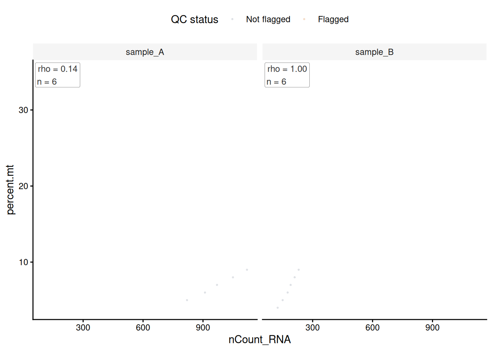

qc_metadata <- data.frame(
sample = paste0("sample_", 1:7),
library_size = c(2.4e6, 2.5e6, 2.6e6, 2.7e6, 2.8e6, 0.5e6, NA_real_),
detected_genes = c(12000, 12500, 13100, 12800, 13400, 1600, 12200),
pct_mito = c(4, 5, 6, 5, 7, 8, 30)
)
qc_result <- mad_qc(
qc_metadata,
metrics = c(
library_size = "lower",
detected_genes = "lower",
pct_mito = "upper"
),
output = "report",
verbose = FALSE
)
qc_result$flags[, c("id", "library_size", "detected_genes",
"pct_mito", "mad_qc_outlier")]
#> id library_size detected_genes pct_mito mad_qc_outlier
#> 1 1 FALSE FALSE FALSE FALSE
#> 2 2 FALSE FALSE FALSE FALSE
#> 3 3 FALSE FALSE FALSE FALSE
#> 4 4 FALSE FALSE FALSE FALSE
#> 5 5 FALSE FALSE FALSE FALSE
#> 6 6 TRUE TRUE FALSE TRUE
#> 7 7 NA FALSE TRUE TRUEmad_qc() flags selected tails of numeric metrics. A flag is evidence of statistical atypicality within the supplied reference distribution, not a diagnosis of cell quality.
| Direction | Flagged values |
|---|---|
lower |
Below the lower limit |
upper |
Above the upper limit |
both |
Outside either limit |
Limits are estimated as the median plus or minus nmads scaled MADs after any transformation. By default, nmads = 3 and the MAD constant is 1.4826.
Missing values and threshold status
Missing metric values receive NA flags. The combined flag is TRUE if any metric is flagged; if none is flagged, it is NA when any metric flag is unresolved. Because the combined flag uses an OR rule, its flagged fraction can rise as more metrics are included. Review per-metric counts alongside it.
The example uses percentage points for pct_mito: 8 denotes 8%.
The threshold report gives status, limits on raw and transformed scales, and counts of reference, flagged, and unresolved observations.
transformed_result <- mad_qc(
qc_metadata,
metrics = c(library_size = "lower", pct_mito = "upper"),
transform = c(library_size = "log1p"),
output = "report",
verbose = FALSE
)
transformed_result$thresholds[, c(
"metric", "direction", "transform", "lower_raw", "upper_raw",
"status", "n_used", "n_flagged", "n_unresolved"
)]
#> metric direction transform lower_raw upper_raw status n_used n_flagged
#> 1 library_size lower log1p 1961998 NA ok 6 1
#> 2 pct_mito upper none NA 10.4478 ok 7 1
#> n_unresolved
#> 1 1
#> 2 0min_n defaults to 5 non-missing reference observations per metric and group. Groups below this size have insufficient_n status; groups with no observed values have all_missing status.
Zero MAD
A zero MAD provides no estimate of non-zero spread. Choose how to handle it:
zero_mad |
Behavior in mad_qc()
|
|---|---|
"na" (default) |
Leave flags unresolved |
"zero" |
Set the selected limit at the median and flag values beyond it |
"error" |
Stop |
RNA and ATAC metrics
The following directions are common starting points, not universal rules. Metric definitions and their relationship to biology depend on the assay, protocol, and sample.
| Modality | Example metric | Example direction | Example transformation |
|---|---|---|---|
| RNA |
nCount_RNA, nFeature_RNA
|
lower |
log1p |
| RNA | percent.mt |
upper |
none |
| ATAC | nCount_peaks |
lower |
log1p |
| ATAC | TSS.enrichment |
lower |
none |
| ATAC | nucleosome_signal |
upper |
none |
For example, in droplet RNA-seq, mitochondrial percentage can reflect cell damage, but it may also vary with cell type or biological state. ATAC metrics also depend on how peaks, TSS enrichment, and nucleosome signal were defined. Inspect distributions by sample and known cell groups before filtering.
rna_metadata <- data.frame(
sample = rep(c("sample_A", "sample_B"), each = 6),
nCount_RNA = c(820, 910, 970, 1050, 1120, 100, 125, 150, 175, 190, 210, 230),
nFeature_RNA = c(430, 480, 520, 570, 610, 55, 80, 95, 100, 115, 125, 140),
percent.mt = c(5, 6, 7, 8, 9, 35, 4, 5, 6, 7, 8, 9)
)
rna_report <- mad_qc(
rna_metadata,
metrics = c(
nCount_RNA = "lower",
nFeature_RNA = "lower",
percent.mt = "upper"
),
transform = c(nCount_RNA = "log1p", nFeature_RNA = "log1p"),
output = "report",
verbose = FALSE
)
rna_report$thresholds[, c("metric", "direction", "transform", "status")]
#> metric direction transform status
#> 1 nCount_RNA lower log1p ok
#> 2 nFeature_RNA lower log1p ok
#> 3 percent.mt upper none ok
atac_metadata <- data.frame(
nCount_peaks = c(1200, 1800, 3200, 6000, 9000, 20000, 2500, 4100),
TSS.enrichment = c(0.8, 1.3, 3.0, 5.4, 8.0, 15.0, 4.1, 6.2),
nucleosome_signal = c(3.5, 2.4, 1.8, 1.4, 1.1, 0.9, 1.6, 1.3)
)
atac_report <- mad_qc(
atac_metadata,
metrics = c(
nCount_peaks = "lower",
TSS.enrichment = "lower",
nucleosome_signal = "upper"
),
transform = c(nCount_peaks = "log1p"),
output = "report",
verbose = FALSE
)
atac_report$thresholds[, c("metric", "direction", "transform", "status")]
#> metric direction transform status
#> 1 nCount_peaks lower log1p ok
#> 2 TSS.enrichment lower none ok
#> 3 nucleosome_signal upper none okBatch and reference thresholds
batch estimates limits separately within each label. subset selects the reference observations used in each group; flags are still returned for all observations. Define a reference set independently of the QC metrics when possible, since metric-based selection can bias the limits.
Warning
MAD limits describe the reference distribution, not an external quality standard. If most reference cells are poor, their values still define the baseline. Batch-specific limits can also miss a uniform shift across a batch. Inspect distributions by batch and cell type; add absolute criteria only when supported by the assay or protocol. OSCA basic discusses these adaptive QC assumptions.
The 416B OSCA workflow illustrates QC metrics across plates with batch information. veryMAD uses MAD-based thresholds on supplied metrics; it does not reproduce scuttle::quickPerCellQC().
rna_annotated <- mad_qc(
rna_metadata,
metrics = c(
nCount_RNA = "lower",
nFeature_RNA = "lower",
percent.mt = "upper"
),
transform = c(nCount_RNA = "log1p", nFeature_RNA = "log1p"),
batch = rna_metadata$sample,
verbose = FALSE
)
if (requireNamespace("ggplot2", quietly = TRUE)) {
plot_mad_qc(rna_annotated,
c("nCount_RNA", "nFeature_RNA", "percent.mt"),
batch = rna_metadata$sample)
plot_mad_qc_scatter(rna_annotated, "nCount_RNA", "percent.mt",
batch = rna_metadata$sample)
}
The scatter plot reports descriptive Spearman correlations and finite-pair counts within each sample. It omits p-values because cells are not independent experimental replicates; interpret rho descriptively.
Seurat metadata
mad_qc() accepts a Seurat object and adds flags to cell metadata; it does not calculate QC metrics. For mitochondrial percentage, define a species- and assay-appropriate feature set and use Seurat::PercentageFeatureSet() with the intended assay. Check feature identifiers and denominator: the function divides selected-feature counts by all counts in the chosen assay and reports 0–100%.
This synthetic example checks that annotation preserves cell order and accepts a reference set defined before QC.
if (requireNamespace("SeuratObject", quietly = TRUE)) {
counts <- Matrix::Matrix(
seq_len(40) %% 6,
nrow = 5,
sparse = TRUE,
dimnames = list(paste0("gene-", 1:5), paste0("cell-", 1:8))
)
seurat_object <- SeuratObject::CreateSeuratObject(counts = counts)
seurat_object[["percent.mt"]] <- c(4, 5, 6, 7, 8, 9, 10, 30)
seurat_object$sample <- rep(c("sample_A", "sample_B"), each = 4)
seurat_object$reference_cells <- c(TRUE, TRUE, TRUE, FALSE,
TRUE, TRUE, TRUE, FALSE)
cell_ids <- colnames(seurat_object)
seurat_annotated <- mad_qc(
seurat_object,
metrics = c(
nCount_RNA = "lower",
nFeature_RNA = "lower",
percent.mt = "upper"
),
transform = c(nCount_RNA = "log1p", nFeature_RNA = "log1p"),
batch = seurat_object$sample,
subset = seurat_object$reference_cells,
min_n = 3,
verbose = FALSE
)
stopifnot(identical(rownames(seurat_annotated[[]]), cell_ids))
head(seurat_annotated[[]][, c("nCount_RNA", "nFeature_RNA",
"percent.mt", "mad_qc_outlier")])
}
#> nCount_RNA nFeature_RNA percent.mt mad_qc_outlier
#> cell-1 15 5 4 NA
#> cell-2 10 4 5 NA
#> cell-3 11 4 6 NA
#> cell-4 12 4 7 NA
#> cell-5 13 4 8 NA
#> cell-6 14 4 9 NAFor a larger simulated example with batch-specific plots and raw-scale thresholds, see QC plots.